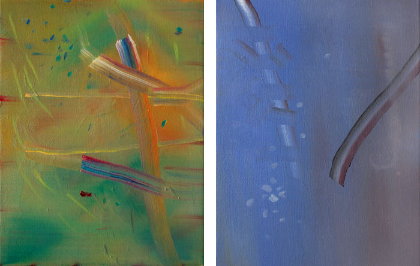

exhibition archive |
||
Day Ofby Elizabeth Deasy November 5 - December 12, 2009 Opening Reception: Images Above: |
The Wild Project is pleased to present Day Of, an exhibition of abstract paintings by Elizabeth Deasy. Her instinctual approach to painting is always about the present moment of creation, leaving the work charged with emotional resonance. The paintings employ a variety of complex color schemes and techniques that create varied spatial propositions and evoke the tactile quality of light. The following is a statement by the artist about her process: “For me, painting is a practice of being absolutely present with myself. This involves making whatever choices are the most compelling to me in the series of balancing acts that constitute creating, whether those acts are methodical and discreet, or impulsive and brazen. In mixing a palette from scratch, and in trusting the coupled and collective wisdom of my eye and hand, I conjure into existence fragments of my inner world: the parts that lie just beyond the reach of language.” Elizabeth Deasy is a painter based in New York City. Her work has been exhibited in New York, Chicago and throughout the United States. The Wild Project, an environmentally conscious venue for contemporary theater, film, and visual arts, is dedicated to supporting the arts by offering space and resources to emerging artists. The first gallery and theatre space in New York City to have a green roof, Wild Project’s programming intends to cultivate a supportive artistic network, explore innovative and thoughtful approaches to art making and by doing so enrich the local community. For more information please contact Hilary Schaffner at 212. 228.1195 or info@thewildproject.com |
|
exhibition archive |
|||
| 2016 | 2015 | 2014 | 2013 |
| 2011 | 2010 | 2009 | 2008 |